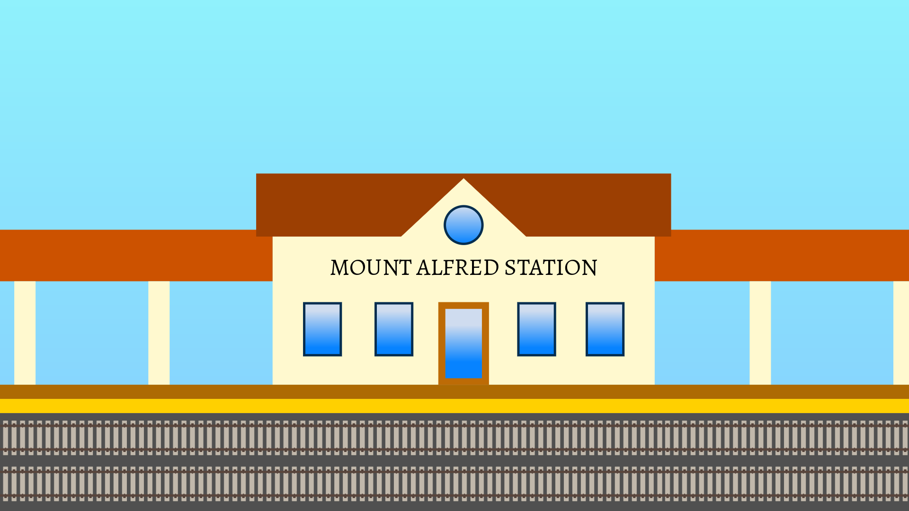

Welcome!
Welcome to Mount Alfred, Pennsylvania, a quiet mountain town hiding one of the greatest railroad mysteries in history.
A steam train disappeared over one hundred years ago. Can you solve the mystery?

Welcome to Mount Alfred, Pennsylvania, a quiet mountain town hiding one of the greatest railroad mysteries in history.
A steam train disappeared over one hundred years ago. Can you solve the mystery?
